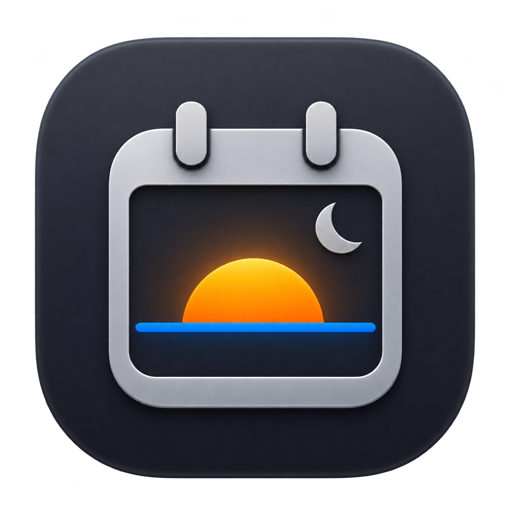
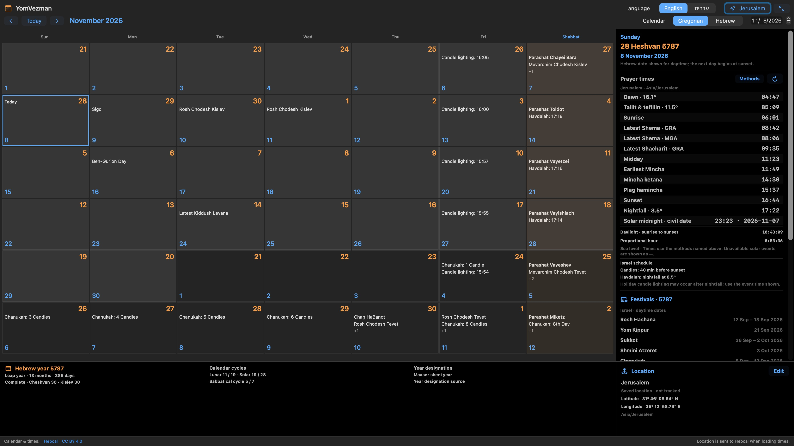

A month in full view
Switch between Hebrew and Gregorian months, with both dates together. Resize the window or use full screen. Choose English or Hebrew.

YomVezmanA Hebrew calendar, at home on your Mac
Hebrew dates, festivals and daily prayer times in one clear workspace. Room to see the whole month. Detail when you need it.
For Macs with Apple silicon · macOS 14 or later
Signed and notarized · App version 0.8.1 (11)
Prerelease notes, checksum and testing limits

Space for the details that matter
Switch between Hebrew and Gregorian months, with both dates together. Resize the window or use full screen. Choose English or Hebrew.
See daily prayer times for your chosen place and timezone, with named calculation methods and adjustable candle-lighting and Havdalah preferences.
Find festival dates, Torah readings and Hebrew-year information beside the calendar. Choose the Israel or diaspora schedule.
Explore traditional molad times, month starts and Mevarchim dates in a yearly table that distinguishes mean conjunction from astronomical new moon.
Your place, your practice
Calendar events and default times come from Hebcal. Optional custom daily calculations run on your Mac. Check your chosen location, timezone and method against your community’s practice.
Fresh source information needs an internet connection. When saved matching information is used offline, YomVezman labels it clearly.
Read about data and privacy0.8.1 bounds oversized calendar downloads during transfer. Introduced in the feature-freeze preview: an offline Hebrew Psalms reader with all 150 chapters from the Tanach with Nikkud edition, exact verse references, daily portions and keyboard navigation. The Hebrew text is attributed to Sefaria / tanach.us (Public Domain). Automatic checks are off by default; installation requires your confirmation. Versions through 0.3.0 need one manual installation to acquire this updater.
This is a feature-freeze preview, not the 0.9.0 release candidate or an App Store-approved build. Full Dock-free lifecycle, first-use location permission flows, spoken VoiceOver date editing and same-process connection recovery remain mandatory acceptance checks before 0.9.0 RC. Store validation belongs to 1.0.0. Check your selected times and methods before relying on them.